Introduction
Time series analysis often requires modeling temporal dependencies where observations at different points in time are correlated. The Ornstein-Uhlenbeck (OU) process is a fundamental continuous-time stochastic process widely used in spatial statistics, time series analysis, and Bayesian modeling applications. Originally developed to describe the velocity of a massive Brownian particle under friction, the OU process has become essential for modeling mean-reverting behavior in diverse fields including finance, physics, biology, and environmental science.
The OU process provides a flexible framework for modeling data where observations exhibit mean reversion—the tendency to drift toward a long-term average over time. This characteristic makes it particularly valuable for modeling phenomena such as interest rates, commodity prices, temperature variations, and biological processes that fluctuate around an equilibrium state.
The ngme2 package extends traditional OU process
implementations in several key ways:
- Non-Gaussian noise distributions: Supports Normal Inverse Gaussian (NIG) and Generalized Asymmetric Laplace (GAL) distributions, enabling modeling of data with asymmetric behavior, heavy tails, and complex dependence structures.
- Irregular time grids: Naturally handles non-uniform sampling intervals and missing observations through its continuous-time formulation.
- Mixed effects integration: Enables the use of OU processes as latent models within linear regression frameworks, allowing researchers to model complex hierarchical data structures with mean-reverting dependencies at the latent level.
This vignette provides a comprehensive guide to implementing and using Ornstein-Uhlenbeck models within the ngme2 framework.
Model Specification and Discrete-Time Representation
Ornstein-Uhlenbeck Process Definition
The Ornstein-Uhlenbeck process is a continuous-time stochastic process that describes mean-reverting behavior. In this vignette, we consider the centered OU process (with zero mean) defined by the stochastic differential equation:
where:
- is the process value at time
- is the mean reversion rate (speed of reversion toward zero)
- is the diffusion coefficient (volatility)
- is a standard Wiener process (Brownian motion)
The drift term pulls the process toward zero: when , the drift is negative; when , the drift is positive. This mean-reverting property is what distinguishes the OU process from a simple random walk.
Note on mean: In practical applications, if the data has a non-zero mean, it should be removed before fitting the OU model (or included through fixed effects in the regression framework).
Exact Discretization and Connection to AR(1)
Consider discrete observation times with time intervals . The exact solution of the SDE from time to is obtained using the integrating factor method. By applying Itô’s lemma to , we obtain:
This drift-free equation integrates to give:
Solving for yields the exact discrete-time representation:
where:
- is the autocorrelation parameter
- are independent innovations with mean zero
- For Gaussian noise: with
- For non-Gaussian noise (NIG/GAL): follows the specified distribution with variance
The stochastic integral is computed via Itô isometry, making this an exact discretization rather than a numerical approximation.
This is an AR(1) process. The discrete-time representation has exactly the form of a centered first-order autoregressive model. When observations are equally spaced with constant interval , we have constant for all intervals, reducing to the standard AR(1) model with parameter .
The key advantage of the OU formulation is that for irregular time grids, it automatically computes the appropriate autocorrelation for each specific interval , naturally handling:
- Non-uniform sampling intervals
- Observations at any real-valued time points
- Gaps of varying lengths with automatic variance adjustment
- Physical interpretation through the mean reversion rate
In essence, the OU process is a centered continuous-time AR(1) model that extends naturally to irregularly observed data on (not just integers).
Key Properties
Stationarity: The constraint (equivalently ) ensures the process is stationary. For the initial condition:
Equilibrium Distribution: In the stationary distribution:
- Mean:
- Variance:
Mean Reversion Rate: The parameter controls the speed of mean reversion toward zero:
- Large : Fast reversion (short half-life )
- Small : Slow reversion (long half-life)
Autocorrelation Function: For constant time intervals , the autocorrelation exhibits exponential decay:
This exponential decay is the hallmark of the OU process, distinguishing it from other mean-reverting models.
Markov Property: The OU process satisfies . This first-order Markov property emerges from the recursive structure with independent innovations, implying a sparse precision matrix structure for efficient computation.
Noise Distributions in ngme2: The innovation terms can follow:
-
Gaussian: Traditional approach with symmetric,
light-tailed errors
- Parameters:
sigma(standard deviation)
- Parameters:
-
Normal Inverse Gaussian (NIG): Allows for skewness
and heavy tails
- Parameters:
mu(asymmetry/location),sigma(scale),nu(tail heaviness) - Note:
muhere is an asymmetry parameter of the NIG distribution, NOT the mean of the OU process
- Parameters:
-
Generalized Asymmetric Laplace (GAL): Accommodates
peakedness, skewness, and heavy tails
- Parameters:
mu(asymmetry/location),sigma(scale), additional shape parameters - Note:
muhere is an asymmetry parameter of the GAL distribution, NOT the mean of the OU process
- Parameters:
Implementation in ngme2
Basic Syntax
To specify an OU model in ngme2, use the f() function
with the model="ou" argument within your model formula:
f(time_index, model="ou"). When not specifying the
noise argument in f(), the process defaults to
Gaussian noise.
You need to specify the OU-specific parameter:
-
theta: Mean reversion rate (must be positive)
Note: The OU process in this vignette is centered at zero. If your data has a non-zero mean, you should either: 1. Center the data before fitting 2. Include an intercept or other fixed effects in your regression model to capture the mean
For simulation purposes, it is important to define the
sigma parameter in the noise specification, as this
controls the diffusion coefficient of the process. For estimation,
specifying sigma is optional since the model will
automatically estimate this parameter from the observed data.
Creating an OU Model
Let’s create an OU model using an irregular time grid to demonstrate how ngme2 handles non-uniform time intervals. First, we load the necessary packages and set up the basic parameters:
library(ngme2)
library(ggplot2)
library(gridExtra)
set.seed(16)
# Define time points with gaps (irregular spacing)
time_points <- c(0, 1.5, 3.2, 4.8, 7.5)
# Define OU model parameters
theta_val <- 0.8 # Mean reversion rate
sigma_val <- 2.0 # Diffusion coefficient
# Define OU model with Gaussian noise (centered at zero)
ou_model <- f(time_points,
model = ou(theta = theta_val),
noise = noise_normal(sigma = sigma_val)
)Notice that in ngme2, it is possible to have gaps in the time grid, and the time points can be provided in any order. For example, observations at times 2.0, 4.0, 6.0, etc. might be missing. The OU model will still maintain the mean-reverting dependence structure across these gaps, automatically adjusting the autocorrelation based on the actual time intervals . Internally, ngme2 automatically constructs the sorted time grid and computes the appropriate values for each interval.
Understanding Time Intervals
To better understand how the OU model adapts to irregular sampling, let’s examine the relationship between time intervals and their corresponding autocorrelation values:
# Examine time intervals
time_intervals <- diff(sort(time_points))
rho_values <- exp(-theta_val * time_intervals)
print("Time intervals:")
#> [1] "Time intervals:"
print(time_intervals)
#> [1] 1.5 1.7 1.6 2.7
print("Corresponding rho values:")
#> [1] "Corresponding rho values:"
print(rho_values)
#> [1] 0.3011942 0.2566608 0.2780373 0.1153251We can see that each time interval produces a different autocorrelation . Longer gaps result in smaller autocorrelations, reflecting weaker dependence between more distant observations.
Matrix Structure
The ngme2 package constructs several important matrices internally. We can examine the operator matrix structure that relates the OU process to the independent noise terms:
# Examine the K matrix structure
K_matrix <- ou_model$operator$K
print("OU Operator Matrix:")
#> [1] "OU Operator Matrix:"
print(K_matrix)
#> 5 x 5 sparse Matrix of class "dgCMatrix"
#>
#> [1,] 0.9535628 . . . .
#> [2,] -0.3011942 1.0000000 . . .
#> [3,] . -0.2566608 1.0000000 . .
#> [4,] . . -0.2780373 1.0000000 .
#> [5,] . . . -0.1153251 1The matrix shows the characteristic OU structure:
- The first row contains terms for stationarity
- Subsequent rows have the pattern representing the OU recursion
- Each row reflects the specific time interval through its and variance terms
Sparsity and Efficiency
The sparsity pattern of the precision matrix is crucial for computational efficiency. Let’s examine this structure:
library(Matrix)
# The precision matrix is computed as Q = K^T Hˆ{-1} K,
# Where H = sigma_val^2 diag(h)
H <- sigma_val^2 * diag(ou_model$operator$h)
Q_matrix <- Matrix::t(K_matrix) %*% solve(H, K_matrix)
print("OU Precision Matrix:")
#> [1] "OU Precision Matrix:"
print(Q_matrix)
#> 5 x 5 Matrix of class "dgeMatrix"
#> [,1] [,2] [,3] [,4] [,5]
#> [1,] 0.16488788 -0.04429327 0.00000000 0.00000000 0.00000000
#> [2,] -0.04429327 0.15735175 -0.04010325 0.00000000 0.00000000
#> [3,] 0.00000000 -0.04010325 0.16340785 -0.02574419 0.00000000
#> [4,] 0.00000000 0.00000000 -0.02574419 0.09382406 -0.01067825
#> [5,] 0.00000000 0.00000000 0.00000000 -0.01067825 0.09259259
# Check sparsity (important for computational efficiency)
Q_dense <- as.matrix(Q_matrix)
total_elements <- nrow(Q_matrix) * ncol(Q_matrix)
zero_elements <- sum(abs(Q_dense) < 1e-10)
sparsity <- zero_elements / total_elements
print(paste("Sparsity of precision matrix:", round(sparsity * 100, 1), "%"))
#> [1] "Sparsity of precision matrix: 48 %"The resulting precision matrix maintains its characteristic tridiagonal structure (with modification in the first row due to the stationarity condition), demonstrating the fundamental sparsity properties that make OU models computationally tractable. This sparsity is particularly valuable when scaling to longer time series, as it ensures that computational complexity grows linearly rather than quadratically with the number of observations.
Simulation
Understanding OU model behavior through simulation helps build intuition about mean reversion properties and the impact of different noise distributions. The ngme2 package provides straightforward simulation capabilities that allow us to explore these characteristics systematically.
Setting Up the Simulation Environment
First, let’s prepare our environment and define the basic parameters for our simulations:
Gaussian OU Simulation
We begin with the traditional Gaussian OU model, which assumes normally distributed innovations. This serves as our baseline for comparison. First, we create the OU model object specifying the temporal structure and Gaussian noise:
# Define OU model with Gaussian noise (centered at zero)
ou_gaussian <- f(time_index,
model = ou(theta = theta_sim),
noise = noise_normal(sigma = sigma_sim)
)
# Generate realization from the OU model
W_gaussian <- simulate(ou_gaussian, seed = 456, nsim = 1)[[1]]The f() function creates a model object that contains
all necessary information for simulation and estimation, including the
mean-reverting dependence structure and the Gaussian noise
specification. The simulate() method then generates random
samples according to the specified OU process.
Let’s visualize the simulated Gaussian OU process and examine its mean-reverting behavior:
# Prepare data for plotting
gaussian_data <- data.frame(
time = time_index,
value = W_gaussian
)
# Create time series plot
p1 <- ggplot(gaussian_data, aes(x = time, y = value)) +
geom_line(color = "#2E86AB", alpha = 0.8, linewidth = 0.4) +
geom_hline(
yintercept = 0, linetype = "dashed",
color = "#F18F01", linewidth = 0.8
) +
annotate("text",
x = max(time_index) * 0.9, y = 1,
label = "mean = 0", color = "#F18F01", size = 4
) +
labs(
title = "Gaussian Ornstein-Uhlenbeck Process (Centered)",
subtitle = paste("θ =", theta_sim, ", σ =", sigma_sim),
x = "Time",
y = "Value"
) +
theme_minimal() +
theme(
plot.title = element_text(size = 14, face = "bold"),
plot.subtitle = element_text(size = 11)
)
print(p1)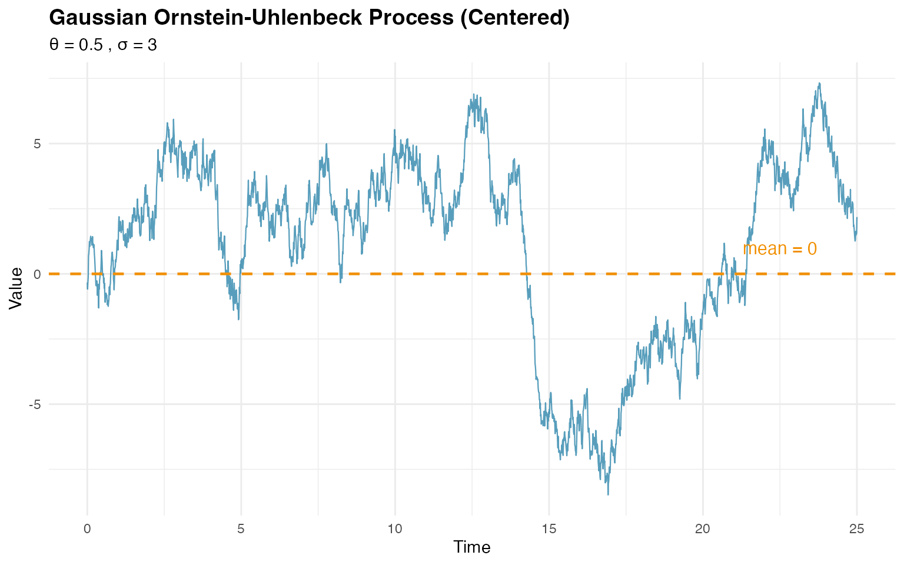
# Calculate and display empirical statistics
cat(
"Empirical mean:", round(mean(W_gaussian), 2),
"(theoretical: 0)\n"
)
#> Empirical mean: 1.12 (theoretical: 0)
theoretical_var <- sigma_sim^2 / (2 * theta_sim)
cat(
"Empirical variance:", round(var(W_gaussian), 2),
"(theoretical:", round(theoretical_var, 2), ")\n"
)
#> Empirical variance: 12.83 (theoretical: 9 )The plot clearly shows the mean-reverting behavior, with the process fluctuating around zero.
NIG OU Simulation
Now let’s explore the flexibility of non-Gaussian innovations using the Normal Inverse Gaussian (NIG) distribution, which can capture asymmetry and heavy tails:
# Define OU model with NIG noise (centered process)
ou_nig <- f(time_index,
model = ou(theta = theta_sim),
noise = noise_nig(mu = -3, sigma = 4, nu = 0.4)
)
# Generate realization from the NIG OU model
W_nig <- simulate(ou_nig, seed = 16, nsim = 1)[[1]]The NIG distribution is specified through noise_nig()
with three parameters:
-
mu= -3: asymmetry parameter (location/skewness) of the NIG distribution for innovations -
sigma= 4: scale parameter controlling spread -
nu= 0.4: shape parameter governing tail heaviness
Important: The mu parameter here
controls the asymmetry of the innovations, NOT the mean
of the OU process. The OU process itself remains centered at zero, but
the innovations can be asymmetric.
Let’s visualize the NIG OU process:
# Prepare data for NIG plot
nig_data <- data.frame(
time = time_index,
value = W_nig
)
# Create time series plot for NIG
p3 <- ggplot(nig_data, aes(x = time, y = value)) +
geom_line(color = "#A23B72", alpha = 0.8, linewidth = 0.4) +
geom_hline(
yintercept = 0, linetype = "dashed",
color = "#F18F01", linewidth = 0.8
) +
annotate("text",
x = max(time_index) * 0.9, y = 2,
label = "mean = 0", color = "#F18F01", size = 4
) +
labs(
title = "NIG Ornstein-Uhlenbeck Process (Centered)",
subtitle = paste(
"θ =", theta_sim, ", σ =", sigma_sim,
", NIG innovations: μ=-3, σ=4, ν=0.4"
),
x = "Time",
y = "Value"
) +
theme_minimal() +
theme(
plot.title = element_text(size = 14, face = "bold"),
plot.subtitle = element_text(size = 11)
)
print(p3)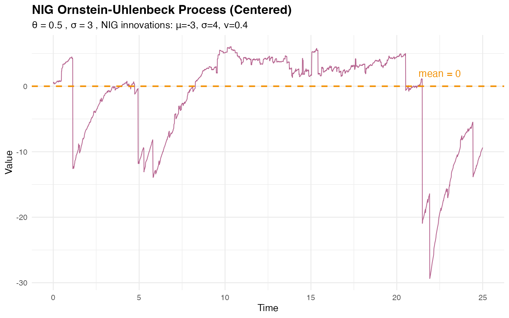
# Display empirical statistics
cat("NIG OU empirical mean:", round(mean(W_nig), 2), "\n")
#> NIG OU empirical mean: -1.69
cat("NIG OU empirical variance:", round(var(W_nig), 2), "\n")
#> NIG OU empirical variance: 52.07The NIG OU process still exhibits mean reversion around zero, but the non-Gaussian innovations with asymmetry introduce different distributional characteristics.
Comparing Distributions
A key advantage of the NIG distribution is its ability to model asymmetric and heavy-tailed behavior. Let’s compare the marginal distributions of the Gaussian and NIG OU processes:
# Combine data for comparison
comparison_data <- data.frame(
value = c(W_gaussian, W_nig),
type = rep(c("Gaussian", "NIG"), each = n_obs)
)
# Create histogram comparison
p4 <- ggplot(comparison_data, aes(x = value, fill = type)) +
geom_histogram(alpha = 0.6, bins = 50, position = "identity") +
scale_fill_manual(values = c("Gaussian" = "#2E86AB", "NIG" = "#A23B72")) +
geom_vline(
xintercept = 0, linetype = "dashed",
color = "#F18F01", linewidth = 0.8
) +
labs(
title = "Distribution Comparison: Gaussian vs NIG OU",
x = "Value",
y = "Frequency",
fill = "Noise Type"
) +
theme_minimal() +
theme(
plot.title = element_text(size = 14, face = "bold"),
legend.position = "top"
)
# Box plot comparison
p5 <- ggplot(comparison_data, aes(x = type, y = value, fill = type)) +
geom_boxplot(alpha = 0.6, outlier.alpha = 0.5) +
geom_hline(
yintercept = 0, linetype = "dashed",
color = "#F18F01", linewidth = 0.8
) +
scale_fill_manual(values = c("Gaussian" = "#2E86AB", "NIG" = "#A23B72")) +
labs(
title = "Distribution Comparison (Box Plots)",
x = "Noise Type",
y = "Value"
) +
theme_minimal() +
theme(
plot.title = element_text(size = 14, face = "bold"),
legend.position = "none"
)
grid.arrange(p4, p5, ncol = 2)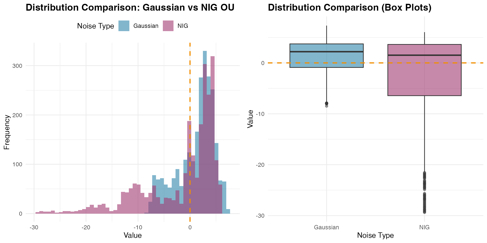
The comparison reveals how the NIG distribution captures different tail behavior and potential asymmetry compared to the Gaussian case, while both processes maintain the same mean-reverting structure around zero.
Visualizing Mean Reversion Across Different Rates
To better understand how the mean reversion rate affects the process behavior, let’s compare OU processes with different values:
# Generate OU processes with different mean reversion rates
theta_values <- c(0.1, 0.5, 2.0) # Slow, medium, fast
ou_comparison_data <- data.frame()
for (theta_test in theta_values) {
ou_temp <- f(time_index,
model = ou(theta = theta_test),
noise = noise_normal(sigma = sigma_sim)
)
W_temp <- simulate(ou_temp, seed = 123, nsim = 1)[[1]]
ou_comparison_data <- rbind(
ou_comparison_data,
data.frame(
time = time_index,
value = W_temp,
theta = paste0("θ = ", theta_test),
half_life = round(log(2) / theta_test, 2)
)
)
}
# Create comparison plot
p_theta_comparison <- ggplot(
ou_comparison_data,
aes(x = time, y = value, color = theta)
) +
geom_line(alpha = 0.7, linewidth = 0.4) +
geom_hline(
yintercept = 0, linetype = "dashed",
color = "black", linewidth = 0.6
) +
scale_color_manual(values = c("#2E86AB", "#F18F01", "#C73E1D")) +
labs(
title = "OU Processes with Different Mean Reversion Rates",
subtitle = paste("All centered at zero with σ =", sigma_sim),
x = "Time",
y = "Value",
color = "Mean Reversion\nRate"
) +
theme_minimal() +
theme(
plot.title = element_text(size = 14, face = "bold"),
legend.position = "right"
)
print(p_theta_comparison)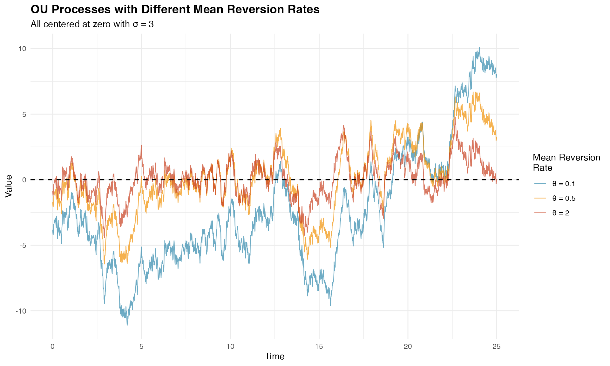
The visualization clearly shows how larger values lead to tighter oscillations around zero, while smaller values allow for longer excursions.
Estimation
Model estimation in ngme2 involves fitting OU models to observed data using advanced optimization techniques. We’ll demonstrate this process using our simulated NIG data combined with fixed effects and measurement noise.
Preparing the Data
Let’s create a realistic dataset with fixed effects, latent OU structure, and measurement noise to demonstrate parameter estimation:
# Define OU model with NIG noise (centered process)
ou_nig <- f(time_index,
model = ou(theta = 0.6),
noise = noise_nig(mu = -3, sigma = 4, nu = 0.4)
)
# Generate realization from the NIG OU model
W_nig <- simulate(ou_nig, seed = 16, nsim = 1)[[1]]
# Define fixed effects and covariates
feff <- c(-1, 2, 0.5)
x1 <- runif(n_obs, 0, 10)
x2 <- rexp(n_obs, 1 / 5)
x3 <- rnorm(n_obs, mean = 5, sd = 1)
X <- model.matrix(~ 0 + x1 + x2 + x3)
# Create response variable with fixed effects, latent process, and measurement noise
Y <- as.numeric(X %*% feff) + W_nig + rnorm(n_obs, sd = 2)
# Prepare data frame
model_data <- data.frame(x1 = x1, x2 = x2, x3 = x3, Y = Y)Model Specification and Fitting
We specify our model using the ngme() function,
incorporating both fixed effects and the latent OU process:
# Fit the model
ngme_out <- ngme(
Y ~ 0 + x1 + x2 + x3 + f(
time_index,
name = "my_ou",
model = ou(theta = theta_sim), # Initial value for theta
noise = noise_nig()
),
data = model_data,
control_opt = control_opt(
optimizer = adam(),
burnin = 100,
iterations = 2000,
std_lim = 0.02,
n_parallel_chain = 4,
n_batch = 5,
verbose = FALSE,
print_check_info = FALSE,
seed = 3
)
)
#> Starting estimation...
#>
#> Starting posterior sampling...
#> Posterior sampling done!
#> Average standard deviation of the posterior W: 6.745843
#> Note:
#> 1. Use ngme_post_samples(..) to access the posterior samples.
#> 2. Use ngme_result(..) to access different latent models.
# Display model summary
ngme_out
#> *** Ngme object ***
#>
#> Fixed effects:
#> x1 x2 x3
#> -0.982 2.007 0.417
#>
#> Models:
#> $my_ou
#> Model type: Ornstein-Uhlenbeck
#> theta = 0.606
#> Noise type: NIG
#> Noise parameters:
#> mu = -2.81
#> sigma = 3.4
#> nu = 0.219
#>
#> Measurement noise:
#> Noise type: NORMAL
#> Noise parameters:
#> sigma = 2.01The formula Y ~ 0 + x1 + x2 + x3 + f(...) specifies that
the response variable Y depends on three fixed effects
(x1, x2, x3) with no intercept
(the 0 term), plus a latent OU process. The latent model is
specified with:
-
name = "my_ou": Assigns a name to the process for later reference -
theta = theta_sim: Provides initial value for (mean reversion rate) -
noise = noise_nig(): Specifies NIG innovations without fixing the parameters
Note: The mu, sigma, and
nu parameters in the output refer to the NIG noise
distribution parameters, where mu is the asymmetry
parameter (not the mean of the OU process, which is zero).
The control_opt() function manages the optimization
process through several key parameters:
-
optimizer = adam(): Uses the Adam optimizer -
iterations = 2000: Maximum number of optimization iterations -
burnin = 100: Initial iterations for algorithm stabilization -
n_parallel_chain = 4: Runs 4 parallel optimization chains -
std_lim = 0.02: Convergence criterion based on parameter standard deviation -
n_batch = 5: Number of intermediate convergence checks
Convergence Diagnostics
Assessing convergence is crucial for reliable parameter estimates. Let’s examine the convergence using traceplots. First, we check the measurement noise and fixed effects parameters:
# Trace plot for sigma and fixed effects (blue lines indicate true values)
traceplot(ngme_out, hline = c(2, -1, 2, 0.5), moving_window = 20)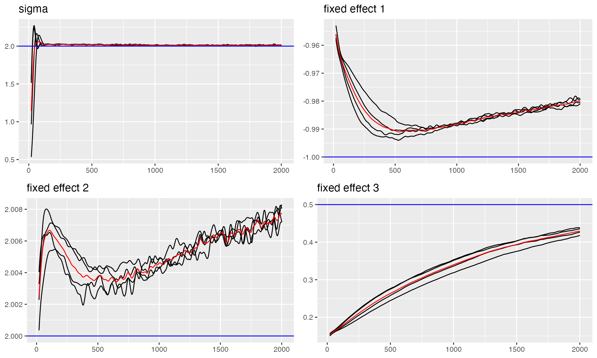
#> Last estimates:
#> $sigma
#> [1] 2.013017
#>
#> $`fixed effect 1`
#> [1] -0.9799725
#>
#> $`fixed effect 2`
#> [1] 2.007684
#>
#> $`fixed effect 3`
#> [1] 0.4297166Now let’s examine the convergence of the OU process parameters, including the mean reversion rate and NIG noise parameters:
# Trace plots for OU parameters
# Note: The parameters shown are theta_K (related to theta), and NIG noise parameters (mu, sigma, nu)
# The 'mu' here is the NIG asymmetry parameter, NOT the mean of the OU process
traceplot(ngme_out, "my_ou", hline = c(0.5, -3, 4, 0.4))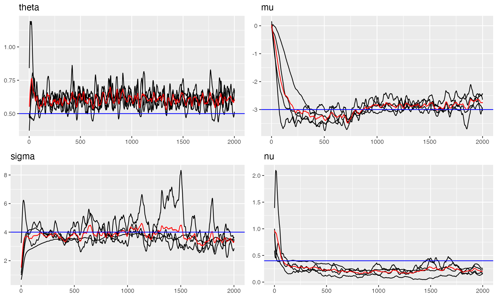
#> Last estimates:
#> $theta
#> [1] 0.6095553
#>
#> $mu
#> [1] -2.769685
#>
#> $sigma
#> [1] 3.371059
#>
#> $nu
#> [1] 0.2042752The trace plots show good convergence for all parameters, with chains stabilizing after the burn-in period and oscillating around the true values.
Parameter Estimates Summary
Let’s examine the final parameter estimates and compare them with the true values:
# Parameter Estimates for Fixed Effects and Measurement Noise
params_data <- ngme_result(ngme_out, "data")
# Fixed Effects
print("Fixed Effects:")
#> [1] "Fixed Effects:"
print(data.frame(
Truth = c(-1, 2, 0.5),
Estimates = as.numeric(params_data$fixed_effects),
row.names = names(params_data$fixed_effects)
))
#> Truth Estimates
#> x1 -1.0 -0.9815246
#> x2 2.0 2.0070000
#> x3 0.5 0.4165593
# Measurement Noise
print("Measurement Noise:")
#> [1] "Measurement Noise:"
print(data.frame(Truth = 2.0, Estimate = params_data$sigma, row.names = "sigma"))
#> Truth Estimate
#> sigma 2 2.011896
# OU Process Parameters (NIG noise parameters)
params_ou <- ngme_result(ngme_out, "my_ou")
print("OU Latent Model - NIG Noise Parameters:")
#> [1] "OU Latent Model - NIG Noise Parameters:"
print("Note: These are parameters of the NIG distribution for the innovations,")
#> [1] "Note: These are parameters of the NIG distribution for the innovations,"
print(" NOT parameters of the OU process itself (which is centered at zero).")
#> [1] " NOT parameters of the OU process itself (which is centered at zero)."
param_df <- data.frame(
Parameter = c("theta_K", "mu_nig", "sigma_nig", "nu_nig"),
Truth = c(0.5, -3.0, 4.0, 0.4),
Estimate = unlist(params_ou),
row.names = names(unlist(params_ou))
)
print(param_df)
#> Parameter Truth Estimate
#> theta theta_K 0.5 0.6000775
#> mu mu_nig -3.0 -2.8086594
#> sigma sigma_nig 4.0 3.3970365
#> nu nu_nig 0.4 0.2186102
print("\n'mu_nig' is the asymmetry parameter of the NIG distribution.")
#> [1] "\n'mu_nig' is the asymmetry parameter of the NIG distribution."
print("The OU process itself has mean = 0.")
#> [1] "The OU process itself has mean = 0."The estimates are very close to the true values, demonstrating successful parameter recovery.
Model Validation
Let’s validate our model by comparing the estimated noise distribution with the true distribution:
# Distribution Validation: Fitted vs. True NIG Noise Model
plot(
noise_normal(sigma = params_data$sigma),
noise_normal(sigma = 2)
)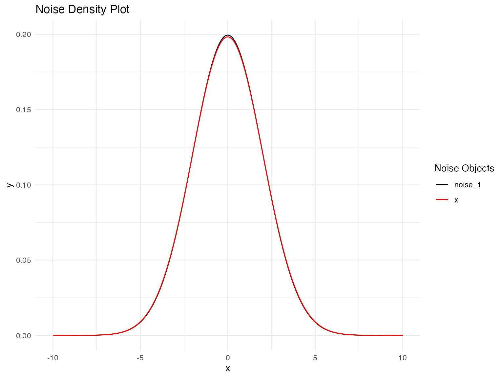
Prediction
Once we have fitted an OU model using ngme2, we can use it to make
predictions for new observations. The predict() method
provides flexible prediction capabilities, allowing us to forecast
future values, interpolate missing observations, or predict at new
covariate combinations.
Hold-out Validation
Hold-out validation demonstrates the procedure for temporal prediction by splitting the data into training and testing portions. This approach tests the model’s ability to predict beyond the fitted time period while maintaining proper temporal ordering.
Configuring the Data Split
We begin by reserving a small number of observations at the end of the time series for testing:
# Configuration for hold-out validation
n_holdout <- 10
n_train <- n_obs - n_holdout
# Split data maintaining temporal order
model_data_train <- model_data[1:n_train, ]
model_data_test <- model_data[(n_train + 1):n_obs, ]
Y_true_test <- Y[(n_train + 1):n_obs]
time_train <- time_index[1:n_train]
time_test <- time_index[(n_train + 1):n_obs]
cat("Training:", n_train, "observations\n")
#> Training: 2490 observations
cat("Testing:", n_holdout, "observations\n")
#> Testing: 10 observationsFitting Model on Training Data
The model is fitted using only the training portion of the data. To ensure proper prediction at test locations, we create a mesh that includes both training and test time points:
library(fmesher)
# Create mesh with both training and test time points
time_full <- c(time_train, time_test)
mesh_full <- fm_mesh_1d(time_full)
ngme_out_train <- ngme(
Y ~ 0 + x1 + x2 + x3 + f(
time_train,
name = "my_ou",
model = ou(mesh_full, theta = theta_sim),
noise = noise_nig()
),
data = model_data_train,
control_opt = control_opt(
optimizer = adam(),
burnin = 100,
iterations = 1600,
std_lim = 0.015,
n_parallel_chain = 4,
n_batch = 8,
verbose = FALSE,
print_check_info = FALSE,
seed = 42
)
)
#> Starting estimation...
#>
#> Starting posterior sampling...
#> Posterior sampling done!
#> Average standard deviation of the posterior W: 6.738078
#> Note:
#> 1. Use ngme_post_samples(..) to access the posterior samples.
#> 2. Use ngme_result(..) to access different latent models.Making Hold-out Predictions
The predict() function requires careful specification of
the map argument. We set type = "lp" (linear
predictor) to obtain predictions for the response variable:
predictions_holdout <- predict(
ngme_out_train,
map = list(my_ou = time_test),
data = model_data_test,
type = "lp",
estimator = c("mean", "sd", "0.05q", "0.95q"),
sampling_size = 1000,
seed = 42
)
pred_mean_holdout <- predictions_holdout$mean
pred_sd_holdout <- predictions_holdout$sd
pred_lower_holdout <- predictions_holdout$`0.05q`
pred_upper_holdout <- predictions_holdout$`0.95q`Evaluating Prediction Results
The prediction results can be evaluated using standard time series forecasting metrics. These provide quantitative measures of prediction accuracy and uncertainty calibration:
pred_errors_holdout <- pred_mean_holdout - Y_true_test
rmse_holdout <- sqrt(mean(pred_errors_holdout^2))
mae_holdout <- mean(abs(pred_errors_holdout))
correlation_holdout <- cor(pred_mean_holdout, Y_true_test)
in_interval_90 <- (Y_true_test >= pred_lower_holdout) &
(Y_true_test <= pred_upper_holdout)
coverage_90 <- mean(in_interval_90)
cat("RMSE:", round(rmse_holdout, 3), "\n")
#> RMSE: 2.434
cat("MAE:", round(mae_holdout, 3), "\n")
#> MAE: 2.074
cat("Correlation:", round(correlation_holdout, 3), "\n")
#> Correlation: 0.966
cat("90% Interval Coverage:", round(coverage_90 * 100, 1), "%\n")
#> 90% Interval Coverage: 30 %
print(data.frame(
Time = round(time_test, 2),
Observed = round(Y_true_test, 2),
Predicted = round(pred_mean_holdout, 2),
Lower_90 = round(pred_lower_holdout, 2),
Upper_90 = round(pred_upper_holdout, 2)
))
#> Time Observed Predicted Lower_90 Upper_90
#> 1 24.91 -2.53 0.17 -0.65 1.01
#> 2 24.92 -9.77 -11.31 -12.17 -10.43
#> 3 24.93 -12.21 -7.55 -8.45 -6.63
#> 4 24.94 6.94 5.16 4.13 6.13
#> 5 24.95 -3.41 -3.93 -4.93 -2.85
#> 6 24.96 15.09 12.46 11.46 13.56
#> 7 24.97 -7.53 -6.81 -7.83 -5.68
#> 8 24.98 -7.90 -11.39 -12.49 -10.20
#> 9 24.99 -2.57 -0.44 -2.10 0.86
#> 10 25.00 15.22 15.78 13.94 17.11Visualizing Hold-out Predictions
Visualization of the hold-out results provides insight into the temporal behavior of predictions:
# Prepare visualization data
context_start <- n_train - 50
context_indices <- context_start:n_obs
context_time <- time_index[context_indices]
context_values <- Y[context_indices]
is_test <- context_indices > n_train
viz_data <- data.frame(
time = context_time,
value = context_values,
type = ifelse(is_test, "Test", "Train")
)
pred_data <- data.frame(
time = time_test,
pred = pred_mean_holdout,
lower = pred_lower_holdout,
upper = pred_upper_holdout
)
p_holdout <- ggplot() +
geom_line(
data = viz_data, aes(x = time, y = value, color = type),
linewidth = 0.4, alpha = 0.7
) +
geom_ribbon(
data = pred_data,
aes(x = time, ymin = lower, ymax = upper),
fill = "#A23B72", alpha = 0.2
) +
geom_line(
data = pred_data, aes(x = time, y = pred),
color = "#A23B72", linewidth = 0.6
) +
geom_point(
data = pred_data, aes(x = time, y = pred),
color = "#A23B72", size = 1.5
) +
scale_color_manual(values = c("Train" = "#2E86AB", "Test" = "#F18F01")) +
labs(
title = "OU Model Hold-out Validation",
subtitle = "Training context with test predictions and 90% intervals",
x = "Time",
y = "Value",
color = "Data Type"
) +
theme_minimal() +
theme(
plot.title = element_text(size = 14, face = "bold"),
legend.position = "top"
)
print(p_holdout)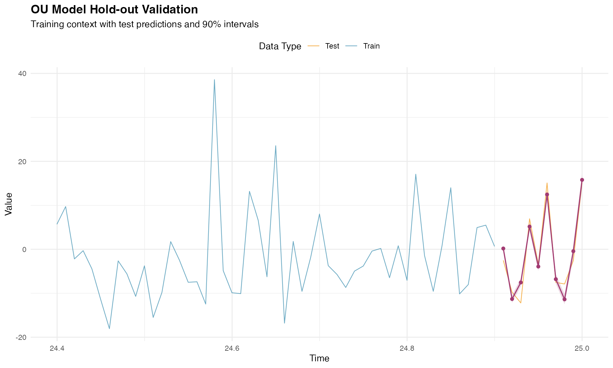
Alternative Method for Hold-out Validation
In the previous approach, we fitted the model using only the training
data and created a mesh that included test locations. However, when we
know the response variable at the test data, there is an easier way to
perform hold-out validation. First, we fit the model with the complete
dataset, which we have already done and is stored in the
ngme_out object.
Next, we perform prediction using the ngme_out object,
passing the indices of the training dataset in the
train_idx argument. This approach is simpler because it
uses the fitted parameters from the complete model while still
evaluating predictions on held-out data:
predictions_holdout_alt <- predict(
ngme_out,
map = list(my_ou = time_test),
data = model_data_test,
type = "lp",
train_idx = 1:n_train,
estimator = c("mean", "sd", "0.05q", "0.95q"),
sampling_size = 1000,
seed = 42
)
pred_mean_holdout_alt <- predictions_holdout_alt$mean
pred_sd_holdout_alt <- predictions_holdout_alt$sd
pred_lower_holdout_alt <- predictions_holdout_alt$`0.05q`
pred_upper_holdout_alt <- predictions_holdout_alt$`0.95q`Let’s check the prediction results. Observe the estimates are slightly different from the ones obtained above. This is due to the fact that this prediction was obtained using the fitted parameters from the complete model, thus performing a pseudo hold-out validation:
pred_errors_holdout_alt <- pred_mean_holdout_alt - Y_true_test
rmse_holdout_alt <- sqrt(mean(pred_errors_holdout_alt^2))
mae_holdout_alt <- mean(abs(pred_errors_holdout_alt))
correlation_holdout_alt <- cor(pred_mean_holdout_alt, Y_true_test)
in_interval_90_alt <- (Y_true_test >= pred_lower_holdout_alt) &
(Y_true_test <= pred_upper_holdout_alt)
coverage_90_alt <- mean(in_interval_90_alt)
cat("RMSE:", round(rmse_holdout_alt, 3), "\n")
#> RMSE: 2.41
cat("MAE:", round(mae_holdout_alt, 3), "\n")
#> MAE: 2.065
cat("Correlation:", round(correlation_holdout_alt, 3), "\n")
#> Correlation: 0.967
cat("90% Interval Coverage:", round(coverage_90_alt * 100, 1), "%\n")
#> 90% Interval Coverage: 30 %
print(data.frame(
Time = round(time_test, 2),
Observed = round(Y_true_test, 2),
Predicted = round(pred_mean_holdout_alt, 2),
Lower_90 = round(pred_lower_holdout_alt, 2),
Upper_90 = round(pred_upper_holdout_alt, 2)
))
#> Time Observed Predicted Lower_90 Upper_90
#> 1 24.91 -2.53 0.12 -0.79 0.94
#> 2 24.92 -9.77 -11.33 -12.22 -10.50
#> 3 24.93 -12.21 -7.58 -8.48 -6.74
#> 4 24.94 6.94 5.17 4.23 6.04
#> 5 24.95 -3.41 -3.84 -4.80 -2.96
#> 6 24.96 15.09 12.52 11.50 13.44
#> 7 24.97 -7.53 -6.73 -7.74 -5.81
#> 8 24.98 -7.90 -11.27 -12.36 -10.32
#> 9 24.99 -2.57 -0.36 -1.46 0.74
#> 10 25.00 15.22 15.88 14.76 16.99Interpolation for Missing Values
OU models are well suited for interpolating missing values because they exploit the mean-reverting temporal dependence between observations. The continuous-time formulation makes it particularly effective for handling irregular sampling and gaps of varying lengths.
Creating Gaps for Interpolation
Let’s introduce artificial gaps at different points in the series to demonstrate the interpolation capability:
# Create gaps at different locations
gap1_indices <- 500:504 # Early gap
gap2_indices <- 1200:1207 # Middle gap (longer)
gap3_indices <- 2000:2003 # Late gap
all_gap_indices <- c(gap1_indices, gap2_indices, gap3_indices)
Y_true_gaps <- Y[all_gap_indices]
train_indices_interp <- setdiff(1:n_obs, all_gap_indices)
model_data_train_interp <- model_data[train_indices_interp, ]
Y_train_vector <- Y[train_indices_interp]
time_train_interp <- time_index[train_indices_interp]
cat("Total gaps to interpolate:", length(all_gap_indices), "\n")
#> Total gaps to interpolate: 17
cat("Training observations:", length(train_indices_interp), "\n")
#> Training observations: 2483Fitting Model for Interpolation
The interpolation model is fitted using only the non-gap observations:
ngme_out_interp <- ngme(
Y_train_vector ~ 0 + x1 + x2 + x3 + f(
time_train_interp,
name = "my_ou_interp",
model = ou(theta = theta_sim),
noise = noise_nig()
),
data = model_data_train_interp,
control_opt = control_opt(
optimizer = adam(),
burnin = 100,
iterations = 1600,
std_lim = 0.015,
n_parallel_chain = 4,
n_batch = 8,
verbose = FALSE,
print_check_info = FALSE,
seed = 42
)
)
#> Starting estimation...
#>
#> Starting posterior sampling...
#> Posterior sampling done!
#> Average standard deviation of the posterior W: 6.737264
#> Note:
#> 1. Use ngme_post_samples(..) to access the posterior samples.
#> 2. Use ngme_result(..) to access different latent models.Making Interpolation Predictions
The interpolation predictions are generated for the gap locations. We provide the corresponding covariate values and time points for prediction:
gap_covariates <- data.frame(
x1 = x1[all_gap_indices],
x2 = x2[all_gap_indices],
x3 = x3[all_gap_indices]
)
gap_times <- time_index[all_gap_indices]
interpolation_pred <- predict(
ngme_out_interp,
map = list(my_ou_interp = gap_times),
data = gap_covariates,
type = "lp",
estimator = c("mean", "sd", "0.05q", "0.95q"),
sampling_size = 1000,
seed = 42
)
interp_mean <- interpolation_pred$mean
interp_sd <- interpolation_pred$sd
interp_lower <- interpolation_pred[["0.05q"]]
interp_upper <- interpolation_pred[["0.95q"]]Evaluating Interpolation Results
The interpolation performance can be assessed by comparing predicted values with the true (known) values at gap locations. These metrics demonstrate the effectiveness of the OU model’s temporal correlation structure for missing value estimation:
interp_errors <- interp_mean - Y_true_gaps
rmse_interp <- sqrt(mean(interp_errors^2))
mae_interp <- mean(abs(interp_errors))
correlation_interp <- cor(interp_mean, Y_true_gaps)
in_interval_90_interp <- (Y_true_gaps >= interp_lower) &
(Y_true_gaps <= interp_upper)
coverage_90_interp <- mean(in_interval_90_interp)
cat("RMSE:", round(rmse_interp, 3), "\n")
#> RMSE: 1.93
cat("MAE:", round(mae_interp, 3), "\n")
#> MAE: 1.545
cat("Correlation:", round(correlation_interp, 3), "\n")
#> Correlation: 0.987
cat("90% Interval Coverage:", round(coverage_90_interp * 100, 1), "%\n")
#> 90% Interval Coverage: 29.4 %
print(data.frame(
Time = round(gap_times[1:10], 2),
Observed = round(Y_true_gaps[1:10], 2),
Interpolated = round(interp_mean[1:10], 2),
Lower_90 = round(interp_lower[1:10], 2),
Upper_90 = round(interp_upper[1:10], 2)
))
#> Time Observed Interpolated Lower_90 Upper_90
#> 1 4.99 -13.50 -8.75 -9.81 -7.54
#> 2 5.00 -9.73 -12.55 -13.61 -11.35
#> 3 5.01 -1.95 -0.14 -1.19 1.05
#> 4 5.02 -13.47 -12.36 -13.41 -11.17
#> 5 5.03 -10.08 -9.65 -10.69 -8.47
#> 6 11.99 10.84 9.10 8.45 9.68
#> 7 12.00 28.86 31.27 30.62 31.84
#> 8 12.01 20.40 20.47 19.82 21.04
#> 9 12.02 6.68 5.04 4.40 5.61
#> 10 12.03 8.21 10.13 9.50 10.70Visualizing Interpolation Results
The interpolation visualization shows how the model fills gaps across different time periods:
# Create visualization for each gap
gap_info <- list(
list(indices = gap1_indices, name = "Gap 1 (Early)"),
list(indices = gap2_indices, name = "Gap 2 (Middle - Longer)"),
list(indices = gap3_indices, name = "Gap 3 (Late)")
)
plot_list <- list()
context_n <- 50
for (i in 1:3) {
gap <- gap_info[[i]]
gap_center <- median(gap$indices)
context_start <- max(1, gap_center - context_n)
context_end <- min(n_obs, gap_center + context_n)
context_range <- context_start:context_end
all_context_data <- data.frame(
time = time_index[context_range],
value = Y[context_range],
is_gap = context_range %in% gap$indices
)
gap_mask <- all_gap_indices %in% gap$indices
interp_gap_data <- data.frame(
time = time_index[gap$indices],
value = interp_mean[gap_mask],
lower = interp_lower[gap_mask],
upper = interp_upper[gap_mask]
)
gap_true_data <- data.frame(
time = time_index[gap$indices],
value = Y[gap$indices]
)
p <- ggplot() +
geom_line(
data = all_context_data, aes(x = time, y = value),
color = "#2E86AB", alpha = 0.6, linewidth = 0.4
) +
geom_point(
data = gap_true_data, aes(x = time, y = value),
color = "#2E86AB", size = 1.2, alpha = 0.8
) +
geom_ribbon(
data = interp_gap_data,
aes(x = time, ymin = lower, ymax = upper),
fill = "#A23B72", alpha = 0.2
) +
geom_line(
data = interp_gap_data, aes(x = time, y = value),
color = "#A23B72", linewidth = 0.5
) +
geom_point(
data = interp_gap_data, aes(x = time, y = value),
color = "#A23B72", size = 1.2, alpha = 0.8
) +
geom_vline(
xintercept = time_index[c(min(gap$indices), max(gap$indices))],
linetype = "dashed", color = "gray50", alpha = 0.6
) +
labs(
title = paste(gap$name, "- OU Interpolation"),
x = "Time",
y = "Value"
) +
theme_minimal() +
theme(
plot.title = element_text(size = 12, face = "bold"),
panel.grid.minor = element_blank()
)
plot_list[[i]] <- p
}
grid.arrange(plot_list[[1]], plot_list[[2]], plot_list[[3]],
ncol = 1,
top = "OU Model Interpolation Across Multiple Time Periods"
)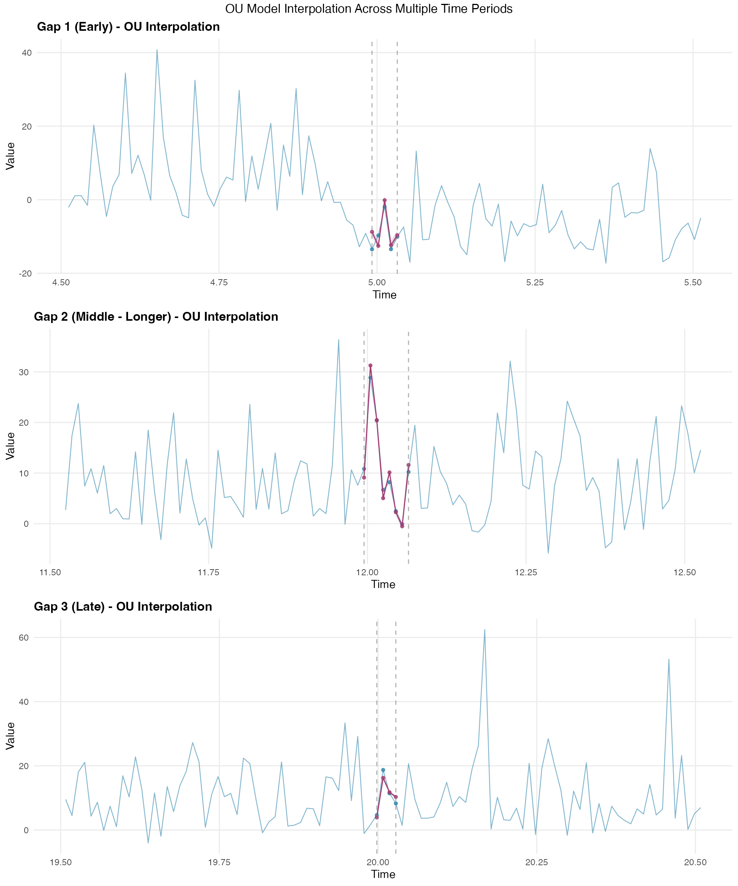
Posterior Simulation
After fitting and validating our OU model, we can generate posterior samples to quantify uncertainty in both the latent process and the response predictions. This Bayesian approach provides comprehensive uncertainty characterization beyond simple point estimates.
Generating Posterior Samples
The ngme2 package provides functionality to generate posterior
samples through the ngme_post_samples() function. These
samples represent different plausible realizations of the latent OU
process given the observed data and estimated parameters:
posterior_samples <- ngme_post_samples(ngme_out)
cat("Number of time points:", nrow(posterior_samples), "\n")
#> Number of time points: 2500
cat("Number of posterior samples:", ncol(posterior_samples), "\n")
#> Number of posterior samples: 100Latent Process Posterior Analysis
Let’s analyze the posterior uncertainty in the latent OU process by computing summary statistics across the posterior samples:
W_posterior_mean <- apply(posterior_samples, 1, mean)
W_posterior_sd <- apply(posterior_samples, 1, sd)
W_posterior_q025 <- apply(posterior_samples, 1, function(x) quantile(x, 0.025))
W_posterior_q975 <- apply(posterior_samples, 1, function(x) quantile(x, 0.975))
comparison_data <- data.frame(
time = time_index,
true_W = W_nig,
posterior_mean = W_posterior_mean,
posterior_lower = W_posterior_q025,
posterior_upper = W_posterior_q975
)
cat(
"Mean absolute difference from true values:",
round(mean(abs(W_posterior_mean - W_nig)), 3), "\n"
)
#> Mean absolute difference from true values: 0.426
cat(
"Average posterior standard deviation:",
round(mean(W_posterior_sd), 3), "\n"
)
#> Average posterior standard deviation: 0.388Latent Process Uncertainty Visualization
This visualization shows how well the model recovers the underlying latent OU process:
# Focus on a section for clearer visualization
viz_range <- 1000:1200
viz_data <- comparison_data[viz_range, ]
p_posterior <- ggplot(viz_data, aes(x = time)) +
geom_ribbon(aes(ymin = posterior_lower, ymax = posterior_upper),
fill = "#A23B72", alpha = 0.3
) +
geom_line(aes(y = true_W, color = "True Latent Process"),
linewidth = 0.5, alpha = 0.8
) +
geom_line(aes(y = posterior_mean, color = "Posterior Mean"),
linewidth = 0.5, alpha = 0.9
) +
geom_hline(
yintercept = 0, linetype = "dashed",
color = "#F18F01", linewidth = 0.7
) +
scale_color_manual(values = c(
"True Latent Process" = "#2E86AB",
"Posterior Mean" = "#A23B72"
)) +
labs(
title = "Posterior Uncertainty in OU Latent Process",
subtitle = "95% Posterior Credible Intervals with True vs Estimated Process",
x = "Time",
y = "Latent Process Value (W)",
color = ""
) +
theme_minimal() +
theme(
plot.title = element_text(size = 14, face = "bold"),
plot.subtitle = element_text(size = 12),
legend.position = "top",
panel.grid.minor = element_blank()
)
print(p_posterior)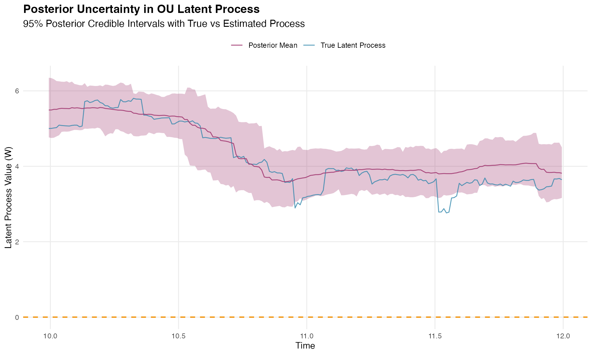
Response Variable Posterior Predictive Check
Let’s assess model adequacy by generating posterior predictive samples for the response variable. These simulated datasets allow us to compare the observed data distribution with the model’s predicted distribution:
n_sims <- 300
# Generate posterior predictive samples for Y
Y_sim <- simulate(ngme_out, posterior = TRUE, m_noise = TRUE, nsim = n_sims)
Y_sim_matrix <- as.matrix(Y_sim)
# Compare observed vs simulated Y values
par(mfrow = c(2, 2), mar = c(4, 4, 3, 1))
# 1. Scatter plot: Observed vs Posterior Mean
y_mean <- rowMeans(Y_sim_matrix)
y_lower <- apply(Y_sim_matrix, 1, quantile, 0.025)
y_upper <- apply(Y_sim_matrix, 1, quantile, 0.975)
plot(y_mean, Y,
pch = 16, col = rgb(0.3, 0.3, 0.3, 0.6), cex = 0.8,
main = "Observed vs Posterior Mean",
xlab = "Posterior Mean", ylab = "Observed Y",
xlim = range(c(y_mean, Y)), ylim = range(c(y_mean, Y))
)
abline(0, 1, col = "red", lwd = 1, lty = 2)
segments(y_mean, y_lower, y_mean, y_upper,
col = rgb(0.64, 0.23, 0.45, 0.1), lwd = 1
)
correlation <- cor(Y, y_mean)
mtext(paste("Correlation =", round(correlation, 3)),
side = 3, line = 0.2, cex = 0.9
)
legend("topleft",
legend = c("Data points", "Perfect fit", "95% CI"),
col = c(rgb(0.3, 0.3, 0.3, 0.6), "red", rgb(0.64, 0.23, 0.45, 0.4)),
pch = c(16, NA, NA), lty = c(NA, 2, 1), lwd = c(NA, 1, 1), bty = "n"
)
# 2. Histogram comparison
hist(Y,
breaks = 40, col = rgb(0.18, 0.53, 0.67, 0.7),
main = "Distribution Comparison", xlab = "Y values",
freq = FALSE, border = "white"
)
hist(unlist(Y_sim),
breaks = 40, col = rgb(0.64, 0.23, 0.45, 0.7),
add = TRUE, freq = FALSE, border = "white"
)
legend("topleft",
legend = c("Observed", "Simulated"),
fill = c(rgb(0.18, 0.53, 0.67, 0.7), rgb(0.64, 0.23, 0.45, 0.7)),
bty = "n"
)
# 3. Q-Q plot
qqplot(Y, unlist(Y_sim),
main = "Q-Q Plot",
xlab = "Observed Y quantiles", ylab = "Simulated Y quantiles",
pch = 16, col = rgb(0.3, 0.3, 0.3, 0.6)
)
abline(0, 1, col = "red", lwd = 1)
# 4. Density comparison
d_observed <- density(Y)
d_simulated <- density(unlist(Y_sim))
plot(d_observed,
col = "#2E86AB", lwd = 1,
main = "Density Comparison",
xlab = "Y values", ylab = "Density",
xlim = range(c(d_observed$x, d_simulated$x)),
ylim = range(c(d_observed$y, d_simulated$y))
)
lines(d_simulated, col = rgb(0.64, 0.23, 0.45, 0.8), lwd = 1)
abline(v = mean(Y), col = "#2E86AB", lty = 2, lwd = 1)
abline(v = mean(unlist(Y_sim)), col = rgb(0.64, 0.23, 0.45, 0.8), lty = 2, lwd = 2)
legend("topleft",
legend = c("Observed", "Simulated", "Obs. mean", "Sim. mean"),
col = c(
"#2E86AB", rgb(0.64, 0.23, 0.45, 0.8), "#2E86AB",
rgb(0.64, 0.23, 0.45, 0.8)
),
lty = c(1, 1, 2, 2), lwd = c(1, 1, 1, 1), bty = "n"
)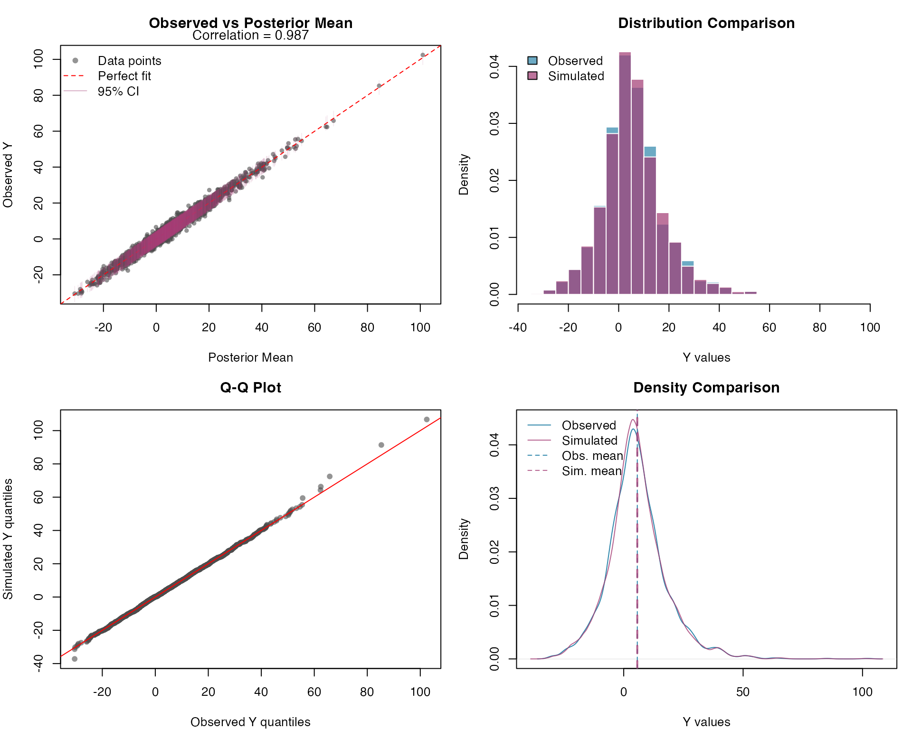
Response Variable Prediction Intervals
Let’s assess the calibration of our prediction intervals. Proper calibration means that the empirical coverage rates should match the nominal levels (50% and 95%):
# Calculate prediction intervals
y_quantiles <- apply(Y_sim_matrix, 1, quantile,
probs = c(0.025, 0.25, 0.5, 0.75, 0.975)
)
# Sort by observed values
sort_idx <- order(Y)
Y_sorted <- Y[sort_idx]
y_quantiles_sorted <- y_quantiles[, sort_idx]
par(mfrow = c(1, 2), mar = c(4, 4, 3, 1))
# 1. Uncertainty bands plot
plot(1:length(Y_sorted), Y_sorted,
type = "l", col = "#2E86AB", lwd = 2,
main = "Posterior Prediction Intervals",
xlab = "Sorted Index", ylab = "Y values",
ylim = range(y_quantiles_sorted)
)
polygon(c(1:length(Y_sorted), rev(1:length(Y_sorted))),
c(y_quantiles_sorted[1, ], rev(y_quantiles_sorted[5, ])),
col = rgb(0.64, 0.23, 0.45, 0.2), border = NA
)
polygon(c(1:length(Y_sorted), rev(1:length(Y_sorted))),
c(y_quantiles_sorted[2, ], rev(y_quantiles_sorted[4, ])),
col = rgb(0.64, 0.23, 0.45, 0.3), border = NA
)
lines(1:length(Y_sorted), y_quantiles_sorted[3, ],
col = rgb(0.64, 0.23, 0.45, 0.8), lwd = 1
)
lines(1:length(Y_sorted), Y_sorted, col = "#2E86AB", lwd = 1)
legend("topleft",
legend = c("Observed", "Median prediction", "50% interval", "95% interval"),
col = c(
"#2E86AB", rgb(0.64, 0.23, 0.45, 0.8),
rgb(0.64, 0.23, 0.45, 0.3), rgb(0.64, 0.23, 0.45, 0.2)
),
lwd = c(2, 2, 8, 8), bty = "n"
)
# 2. Coverage assessment
coverage_50 <- mean(Y >= y_quantiles[2, ] & Y <= y_quantiles[4, ])
coverage_95 <- mean(Y >= y_quantiles[1, ] & Y <= y_quantiles[5, ])
barplot(c(coverage_50, coverage_95),
names.arg = c("50% Interval", "95% Interval"),
main = "Prediction Interval Coverage",
ylab = "Empirical Coverage",
col = c(rgb(0.64, 0.23, 0.45, 0.6), rgb(0.64, 0.23, 0.45, 0.8)),
ylim = c(0, 1)
)
abline(h = c(0.5, 0.95), lty = 2, col = "red")
text(c(0.7, 1.9), c(0.55, 1.0),
labels = c(
paste(round(coverage_50 * 100, 1), "%"),
paste(round(coverage_95 * 100, 1), "%")
),
pos = 3, cex = 0.9
)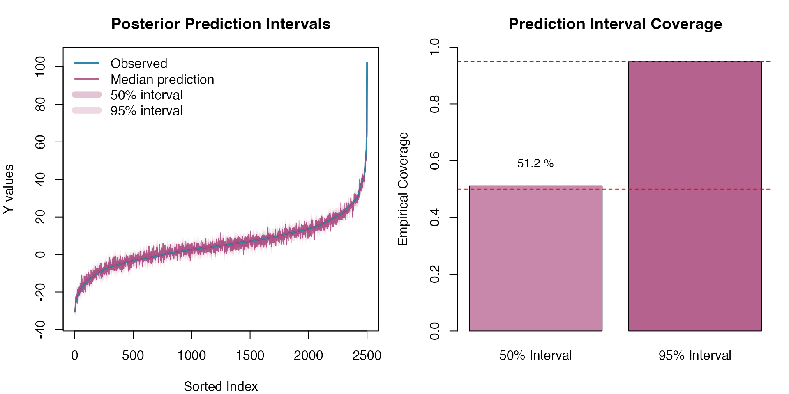
The prediction intervals demonstrate good calibration, with empirical coverage rates close to the nominal levels, confirming that the model adequately captures the uncertainty in both the latent OU process and the response variable.